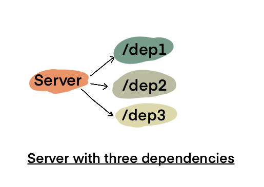

Dependency Mock Server & Black Friday Preparation
Last year while preparing for Black Friday our team had an interesting challenge:
Some of our downstream services1 had proper setup to provide environments/APIs to load test.
This meant will have to configure our systems based on hopeful estimates based on last minute estimates and until then, we would could only sit idle. This wasn't appealing for obvious reasons of doing a hackjob and having a firefighting mode during Black Friday/Cyber Week.
Proposed Solution: Dependency Mock Server
The solution I came up with and which we used was to have a Mock Server that served endpoints similar to our dependencies and return dynamic responses based on request payload.

Next to deploy a separate server configured for load testing which would connect to the Mock Server.
Why not use Stubs instead?
It is true that same can be accomplished via Stubs in code but there are a few issues with it:
- It is a very local solution ie., you cannot reuse the solution for other services you might want to test (unless the solution is in form of a library).
- Stubs don't account for network related resources. For example, in a previous project we ran into an issue where the service came to a standstill because it had to make HTTP calls to external services and during the load test, our server exhausted the thread pool.
- Stubs don't account for
Fallacies of distributed computing. These can lead to a completely different set of unknown/undiscovered problems. For eample while test with Mock System, we came across a lot of unexpected5xxerrors.
Estimating performance
Now that my team was onboard with the idea of Mock Server, next big question was:
How do we ensure that our Load Test numbers are realistic?
Given that we were working with a mock server ie., there was little to no actual processing done and no further API/Database calls were being made by Mock Server; how could we ensure that the performance metrics we came up with were reallistic or as accurate as possible?
For this we used following formula
Expected Response Time @ Load X=Mock Server Response X+Server Response X+Known Pessimistic Responses of Mocked Dependencies
Let's look at this with some example numbers
- Server responds in 200ms
- Mock Server responds in 50ms
- Typical known response time on slower end = 200ms
Then by using the above formula
Expected Response Time=250ms+50ms+200ms
Then we can estimate the server to respond in 250ms to 450ms range.
Actual Load Tests
Later we got a chance to run a co-ordinated Load Test with all of our dependencies ready for the load. We realized that our numbers were pessimistic than how well the downstream services actually performed. This is because the teams were also working on stability and performance of their own services. Good news was that this let us set an upper bound for our SLAs and we could accordingly plan the required optimal configuration to run our production servers.
Conclusion
Hopefully this shed some light on how to prepare for Load Tests in case there are constraints based on downstream service's availability.
-
One of the joys of working in a big corp is to realize a vital service you rely upon is a legacy afterthought of another team. ↩